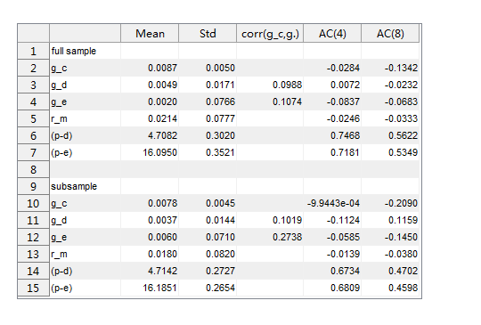
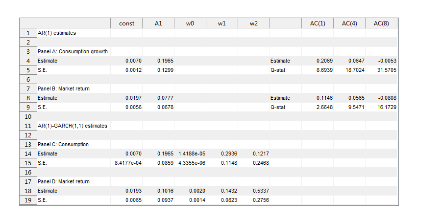
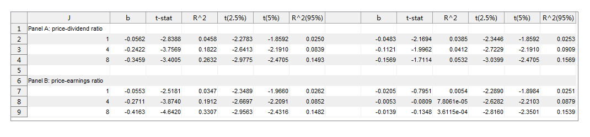
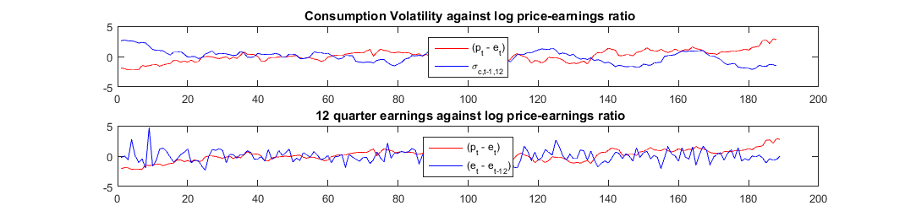
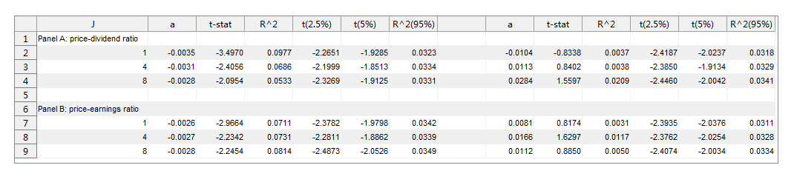
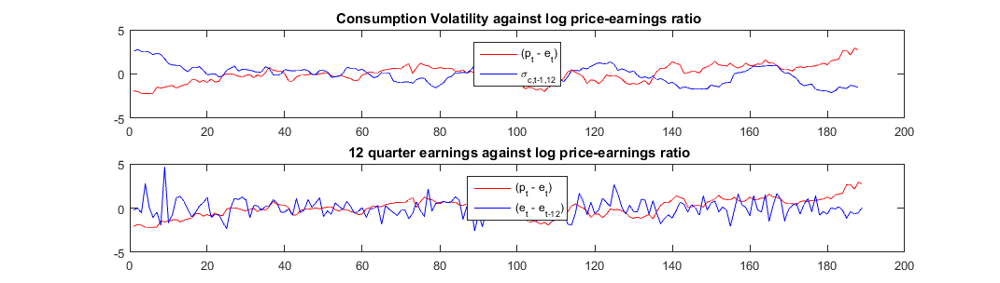
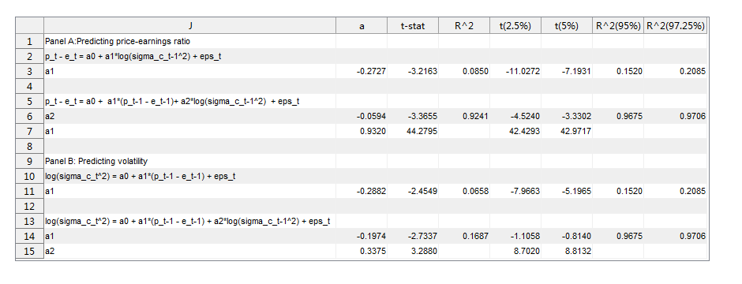
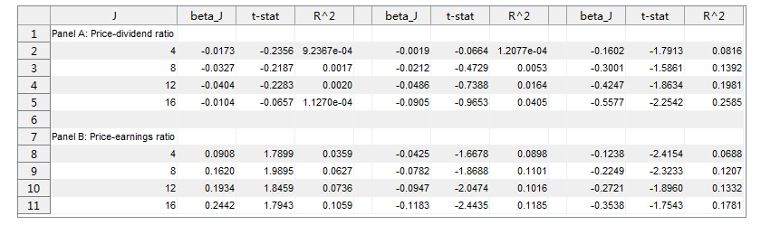
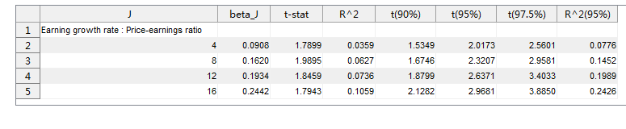

Final_result
Contents
Loading data
cd('J:\WISE\Ren yu\Interpretable asset markets\Copy')
load data
Set up the random seed
rnd_seed = 20170906;
rng(rnd_seed);
mc_time = 5000;
Table 1
var_mean = mean(full_data(:,2:end),1)';
var_std = std(full_data(:,2:end),1)';
corr_g = [nan,corr(full_data(:,2),full_data(:,3)),corr(full_data(:,2),full_data(:,4)),nan,nan,nan]';
ACF(1,:) = autocorr(full_data(:,2), 8);
ACF(2,:) = autocorr(full_data(:,3), 8);
ACF(3,:) = autocorr(full_data(:,4), 8);
ACF(4,:) = autocorr(full_data(:,5), 8);
ACF(5,:) = autocorr(full_data(:,6), 8);
ACF(6,:) = autocorr(full_data(:,7), 8);
AC_4 = ACF(:,5);
AC_8 = ACF(:,9);
var_names = char('g_c','g_d','g_e','r_m','p-d','p-e');
sub_var_mean = mean(sub_data(:,2:end),1)';
sub_var_std = std(sub_data(:,2:end),1)';
sub_corr_g = [nan,corr(sub_data(:,2),sub_data(:,3)),corr(sub_data(:,2),sub_data(:,4)),nan,nan,nan]';
sub_ACF(1,:) = autocorr(sub_data(:,2), 8);
sub_ACF(2,:) = autocorr(sub_data(:,3), 8);
sub_ACF(3,:) = autocorr(sub_data(:,4), 8);
sub_ACF(4,:) = autocorr(sub_data(:,5), 8);
sub_ACF(5,:) = autocorr(sub_data(:,6), 8);
sub_ACF(6,:) = autocorr(sub_data(:,7), 8);
sub_AC_4 = sub_ACF(:,5);
sub_AC_8 = sub_ACF(:,9);
f = figure;
table1_data = cell(15,6);
table1_data(1:15,1) = {'full sample';'g_c';'g_d';'g_e';'r_m';'(p-d)';'(p-e)';'blank'; 'subsample';'g_c';'g_d';'g_e';'r_m';'(p-d)';'(p-e)'};
table1_data(2:7,2:6) = num2cell([var_mean,var_std,corr_g,AC_4,AC_8]);
table1_data{8,1} = [];
table1_data(10:15,2:6) = num2cell([sub_var_mean,sub_var_std,sub_corr_g,sub_AC_4,sub_AC_8]);
table1_data([2,5:7,10,13:15],4) = {[];[];[];[];[];[];[];[]};
t = uitable(f,'Data',table1_data,'Position',[40 220 450 140],'ColumnName',{'Mean','Std','corr(g_c,g.)','AC(4)','AC(8)'});
t.ColumnName = {'','Mean','Std','corr(g_c,g.)','AC(4)','AC(8)'};
f.Position = [280,20,540,365];
t.Position = [20 30 455 310];
t.ColumnWidth = {80,65,65,75,65,65,65};

Table 2
AR = arima('ARLags',1);
ARGARCH = arima('ARLags',1,'Variance',garch(1,1));
estimate
AR_gc = fitlm(full_reg_data, 'g_c~g_c_lag1');
AR_gc_NWvcov = hac(AR_gc,'type','HAC','bandwidth',floor(4*(200/100)^(2/9))+1,'weights','BT','display','off');
AR_rm = fitlm(full_reg_data, 'r_m~r_m_lag1');
AR_rm_NWvcov = hac(AR_rm,'type','HAC','bandwidth',floor(4*(200/100)^(2/9))+1,'weights','BT','display','off');
AR_gc_abs_res = abs(AR_gc.Residuals.Raw(~isnan(AR_gc.Residuals.Raw)));
AR_rm_abs_res = abs(AR_rm.Residuals.Raw(~isnan(AR_rm.Residuals.Raw)));
[h_gc, pValue_gc, Qstat_gc] = lbqtest(AR_gc_abs_res,'lags',[1,4,8]);
[h_rm, pValue_rm, Qstat_rm] = lbqtest(AR_rm_abs_res,'lags',[1,4,8]);
AC_AR(:,1) = autocorr(AR_gc_abs_res);
AC_AR(:,2) = autocorr(AR_rm_abs_res);
[ARGARCH_gc.mdl, ARGARCH_gc.vcov] = estimate(ARGARCH, full_reg_data.g_c,'display','off');
[ARGARCH_rm.mdl, ARGARCH_rm.vcov] = estimate(ARGARCH, full_reg_data.r_m,'display','off');
f2 = figure('Name','Consumption growth and market return projection','NumberTitle','off');
table_2_data = cell(19,10);
table_2_data(1:19,1) = {'AR(1) estimates',[] ,'Panel A: Consumption growth','Estimate','S.E.'...
,[] ,'Panel B: Market return','Estimate','S.E.'...
,[] ,'AR(1)-GARCH(1,1) estimates',[] ,'Panel C: Consumption','Estimate','S.E.'...
,[] ,'Panel D: Market return','Estimate','S.E.'};
table_2_data([4,5,8,9],[2,3,8,9,10]) = num2cell([AR_gc.Coefficients.Estimate', AC_AR([2,5,8],1)';sqrt(diag(AR_gc_NWvcov))', Qstat_gc;...
AR_rm.Coefficients.Estimate', AC_AR([2,5,8],2)';sqrt(diag(AR_rm_NWvcov))', Qstat_rm;]);
table_2_data([14,15],[2,3,4,6,5]) = num2cell([ ARGARCH_gc.mdl.Constant,ARGARCH_gc.mdl.AR{1},...
ARGARCH_gc.mdl.Variance.Constant,ARGARCH_gc.mdl.Variance.GARCH{1},ARGARCH_gc.mdl.Variance.ARCH{1};...
sqrt(diag(ARGARCH_gc.vcov))']);
table_2_data([18,19],[2,3,4,6,5]) = num2cell([ ARGARCH_rm.mdl.Constant,ARGARCH_rm.mdl.AR{1},...
ARGARCH_rm.mdl.Variance.Constant,ARGARCH_rm.mdl.Variance.GARCH{1},ARGARCH_rm.mdl.Variance.ARCH{1};...
sqrt(diag(ARGARCH_rm.vcov))']);
table_2_data([4,5,8,9],7) = {'Estimate','Q-stat','Estimate','Q-stat'};
f2.Position = [560,528,900,450];
table_2 = uitable(f2,'Data',table_2_data,'Position',[40 30 715 385]);
table_2.Position = [40 30 775 385];
table_2.ColumnWidth = {150,65,65,65,65,65,65,65,65,65};
table_2.ColumnName = {[],'const','A1','w0','w1','w2',[],'AC(1)','AC(4)','AC(8)'};

Table 3
J = [1,4,8];
[pdc, cpd] = MC_regress2( full_reg_data.p_min_d, full_reg_data.g_c, J, mc_time);
[pdr, rpd] = MC_regress2( full_reg_data.p_min_d, full_reg_data.r_m, J, mc_time);
[pec, cpe] = MC_regress2( full_reg_data.p_min_e, full_reg_data.g_c, J, mc_time);
[per, rpe] = MC_regress2( full_reg_data.p_min_e, full_reg_data.r_m, J, mc_time);
table_3_data = cell(9,14);
table_3_data([2:4,7:9],1) = num2cell([1,4,8,1,4,8]);
table_3_data([1,6],1) = {'Panel A: price-dividend ratio','Panel B: price-earnings ratio'};
table_3_data([2,3,4],[2,3,4,5,6,7]) = ...
num2cell([pdc.b,pdc.t,pdc.R2adj,pdc.t2_5,pdc.t5,pdc.R2_95]);
table_3_data([2,3,4],[9,10,11,12,13,14]) = ...
num2cell([pdr.b,pdr.t,pdr.R2adj,pdr.t2_5,pdc.t5,pdr.R2_95]);
table_3_data([7,8,9],[2,3,4,5,6,7]) = ...
num2cell([pec.b,pec.t,pec.R2adj,pec.t2_5,pec.t5,pec.R2_95]);
table_3_data([7,8,9],[9,10,11,12,13,14]) = ...
num2cell([per.b,per.t,per.R2adj,per.t2_5,per.t5,per.R2_95]);
f3 = figure('Name','Economic uncertainty predicting future valuation ratios: USA','NumberTitle','off');
f3.Position = [560,528,1070,250];
table_3 = uitable(f3,'Data',table_3_data,'Position',[20 30 1030 200]);
table_3.Position = [20 30 1030 200];
table_3.ColumnWidth = {150,65,65,65,65,65,65,65,65,65,65,65,65,65};
table_3.ColumnName = {'J', 'b', 't-stat', 'R^2', 't(2.5%)','t(5%)','R^2(95%)',[], 'b', 't-stat', 'R^2', 't(2.5%)','t(5%)','R^2(95%)'};

Figure 1
clf
AR_gc = fitlm(full_reg_data.g_c(1:end-1),full_reg_data.g_c(2:end));
full_reg_data.sigma_c_12 = [ones(13,1)*nan;gen_sigma_J(AR_gc.Residuals.Raw, 12)];
subplot(2,1,1)
plot(zscore(full_reg_data.p_min_e(14:end)),'r')
hold on
plot(zscore(full_reg_data.sigma_c_12(14:end)),'b')
title(' Consumption Volatility against log price-earnings ratio');
legend('(p_t - e_t)','\sigma_{c,t-1,12}','Location','north');
subplot(2,1,2)
plot(zscore(full_reg_data.p_min_e(13:end)),'r')
hold on
plot(zscore(full_reg_data.g_e(13:end)-full_reg_data.g_e(1:end-12)),'b')
title(' 12 quarter earnings against log price-earnings ratio');
legend('(p_t - e_t)','(e_t - e_{t-12})','Location','north');

Table 4
table_4_data = cell(9,14);
table_4_data([2:4,7:9],1) = num2cell([1,4,8,1,4,8]);
table_4_data([1,6],1) = {'Panel A: price-dividend ratio','Panel B: price-earnings ratio'};
table_4_data(2:4,2:7) = num2cell([cpd.b,cpd.t,cpd.R2adj,cpd.t2_5,cpd.t5,cpd.R2_95]);
table_4_data(2:4,9:14) = num2cell([rpd.b,rpd.t,rpd.R2adj,rpd.t2_5,rpd.t5,rpd.R2_95]);
table_4_data(7:9,2:7) = num2cell([cpe.b,cpe.t,cpe.R2adj,cpe.t2_5,cpe.t5,cpe.R2_95]);
table_4_data(7:9,9:14) = num2cell([rpe.b,rpe.t,rpe.R2adj,rpe.t2_5,rpe.t5,rpe.R2_95]);
f4 = figure('Name','Valuation ratios prediction future economic uncertainty: USA','NumberTitle','off');
f4.Position = [560,528,1070,250];
table_4 = uitable(f4,'Data',table_4_data,'Position',[20 30 1030 200]);
table_4.Position = [20 30 1030 200];
table_4.ColumnWidth = {150,65,65,65,65,65,65,65,65,65,65,65,65,65};
table_4.ColumnName = {'J', 'a', 't-stat', 'R^2', 't(2.5%)','t(5%)','R^2(95%)',[], 'a', 't-stat', 'R^2', 't(2.5%)','t(5%)','R^2(95%)'};

Table 5
[ vr_sigma, vr_sigma_lag, sigma_vr, sigma_vr_lag] = MC_regress3(full_reg_data.p_min_e, full_reg_data.g_c,1000);
table_5_data = cell(15,8);
table_5_data([1:3,5:7,9:11,13:15],1) = {'Panel A:Predicting price-earnings ratio','p_t - e_t = a0 + a1*log(sigma_c_t-1^2) + eps_t',...
'a1', 'p_t - e_t = a0 + a1*(p_t-1 - e_t-1)+ a2*log(sigma_c_t-1^2) + eps_t','a2','a1',...
'Panel B: Predicting volatility','log(sigma_c_t^2) = a0 + a1*(p_t-1 - e_t-1) + eps_t',...
'a1', 'log(sigma_c_t^2) = a0 + a1*(p_t-1 - e_t-1) + a2*log(sigma_c_t-1^2) + eps_t'...
'a1','a2'};
table_5_data(3,2:8) = num2cell([vr_sigma.b, vr_sigma.t, vr_sigma.R2adj,...
vr_sigma.t2_5, vr_sigma.t5, vr_sigma.R2_95, vr_sigma.R2_97_5]);
table_5_data(6:7,[2,3,5,6]) = num2cell([vr_sigma_lag.b, vr_sigma_lag.t, vr_sigma_lag.t2_5, vr_sigma_lag.t5]);
table_5_data(6,[4,7,8]) = num2cell([vr_sigma_lag.R2adj, vr_sigma_lag.R2_95, vr_sigma_lag.R2_97_5]);
table_5_data(11,2:8) = num2cell([sigma_vr.b, sigma_vr.t, sigma_vr.R2adj,...
sigma_vr.t2_5, sigma_vr.t5, sigma_vr.R2_95, sigma_vr.R2_97_5]);
table_5_data(14:15,[2,3,5,6]) = num2cell([sigma_vr_lag.b, sigma_vr_lag.t, sigma_vr_lag.t2_5, sigma_vr_lag.t5]);
table_5_data(14,[4,7,8]) = num2cell([sigma_vr_lag.R2adj, sigma_vr_lag.R2_95, sigma_vr_lag.R2_97_5]);
f5 = figure('Name','Price-earnings ratios and economic uncertainty: USA','NumberTitle','off');
f5.Position = [560,528,940,360];
table_5 = uitable(f5,'Data',table_5_data,'Position',[20 30 880 310]);
table_5.Position = [20 30 880 310];
table_5.ColumnWidth = {370,65,65,65,65,65,65,80};
table_5.ColumnName = {'J', 'a', 't-stat', 'R^2', 't(2.5%)','t(5%)','R^2(95%)','R^2(97.25%)'};
 
Table 6
J = [4,8,12,16];
[sum_epd] = regress_vr_gr(full_reg_data.p_min_d, full_reg_data.g_e, J);
[sum_epe] = regress_vr_gr(full_reg_data.p_min_e, full_reg_data.g_e, J, mc_time);
[sum_dpd] = regress_vr_gr(full_reg_data.p_min_d, full_reg_data.g_d, J);
[sum_dpe] = regress_vr_gr(full_reg_data.p_min_e, full_reg_data.g_d, J);
[sum_rpd] = regress_vr_gr(full_reg_data.p_min_d, full_reg_data.r_m, J);
[sum_rpe] = regress_vr_gr(full_reg_data.p_min_e, full_reg_data.r_m, J);
table_6_data = cell(11,12);
table_6_data([1:5,7:11],1) = {'Panel A: Price-dividend ratio', 4, 8, 12, 16, ...
'Panel B: Price-earnings ratio', 4, 8, 12, 16};
table_6_data(2:5,2:4) = num2cell([sum_epd.b,sum_epd.t,sum_epd.R2adj]);
table_6_data(8:11,2:4) = num2cell([sum_epe.b,sum_epe.t,sum_epe.R2adj]);
table_6_data(2:5,6:8) = num2cell([sum_dpd.b,sum_dpd.t,sum_dpd.R2adj]);
table_6_data(8:11,6:8) = num2cell([sum_dpe.b,sum_dpe.t,sum_dpe.R2adj]);
table_6_data(2:5,10:12) = num2cell([sum_rpd.b,sum_rpd.t,sum_rpd.R2adj]);
table_6_data(8:11,10:12) = num2cell([sum_rpe.b,sum_rpe.t,sum_rpe.R2adj]);
f6 = figure('Name','Price-earnings ratios and economic uncertainty: USA','NumberTitle','off');
f6.Position = [560,528,840,270];
table_6 = uitable(f6,'Data',table_6_data,'Position',[20 30 805 235]);
table_6.Position = [20 30 805 235];
table_6.ColumnWidth = {140,65,65,65,20,65,65,65,20,65,65,65};
table_6.ColumnName = {'J', 'beta_J', 't-stat', 'R^2', [], 'beta_J', 't-stat', 'R^2', [],'beta_J', 't-stat', 'R^2'};

Table 7
table_7_data = cell(5,8);
table_7_data(1:5,1) = {'Earning growth rate : Price-earnings ratio', 4, 8, 12, 16};
table_7_data(2:5,2:4) = num2cell([sum_epe.b, sum_epe.t, sum_epe.R2adj]);
table_7_data(2:5,5:8) = num2cell([sum_epe.t90, sum_epe.t95, sum_epe.t97_5, sum_epe.R2_95]);
f7 = figure('Name','Price-earnings ratios and growth rates','NumberTitle','off');
f7.Position = [280,20,775,160];
table_7 = uitable(f7,'Data',table_7_data,'Position',[20 30 775 125]);
table_7.Position = [20 30 775 125];
table_7.ColumnWidth = {220,65,65,65};
table_7.ColumnName = {'J', 'beta_J', 't-stat', 'R^2', 't(90%)', 't(95%)', 't(97.5%)', 'R^2(95%)'};
